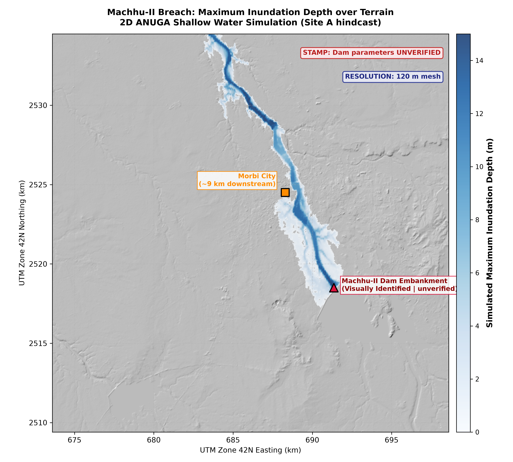
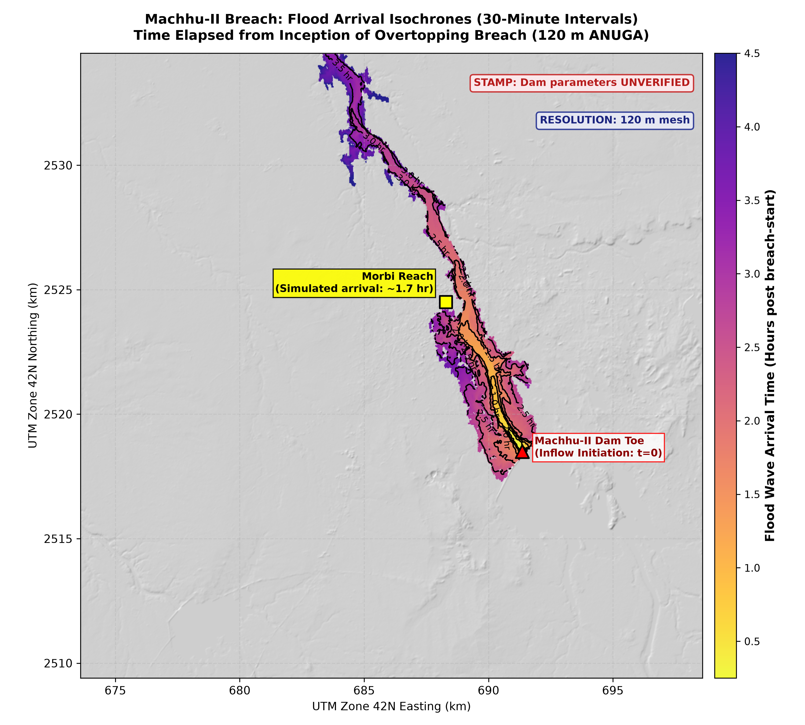
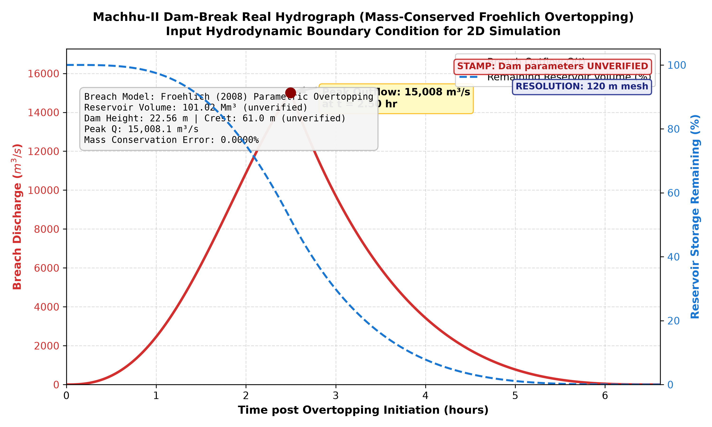
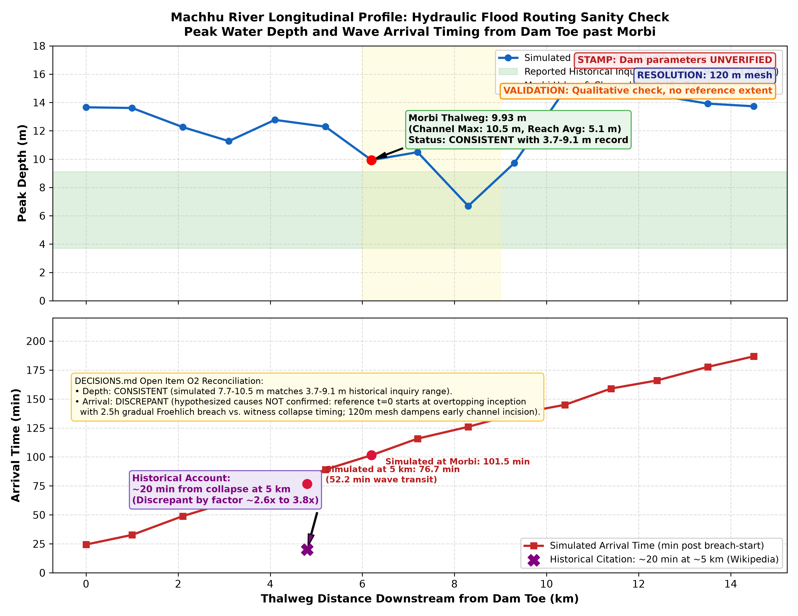
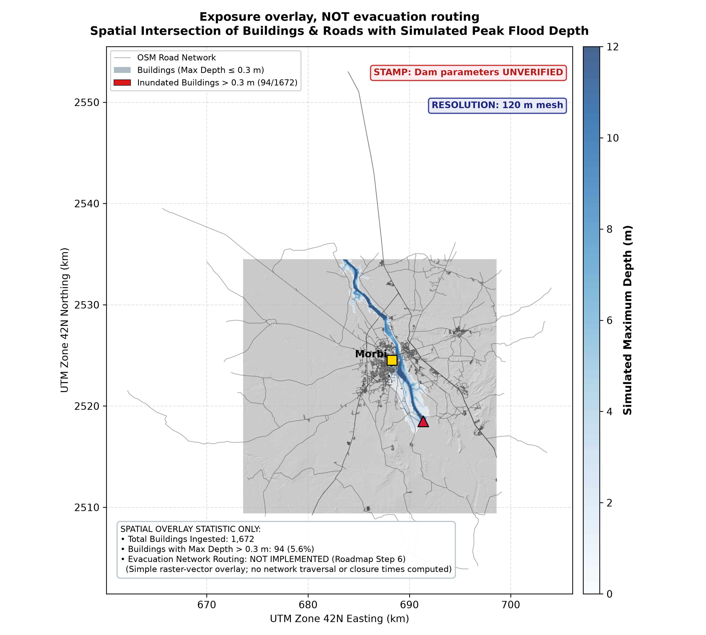
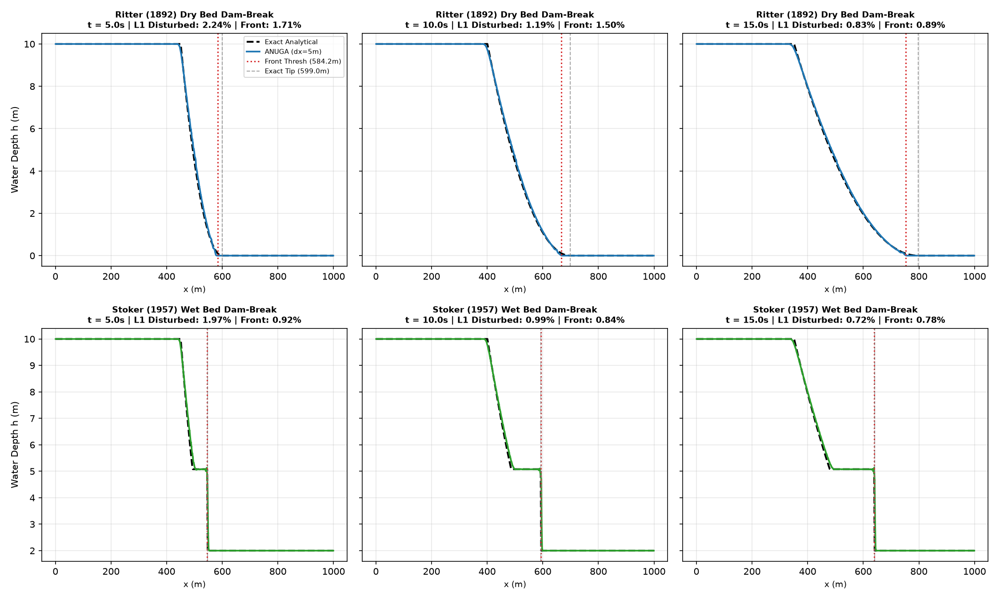
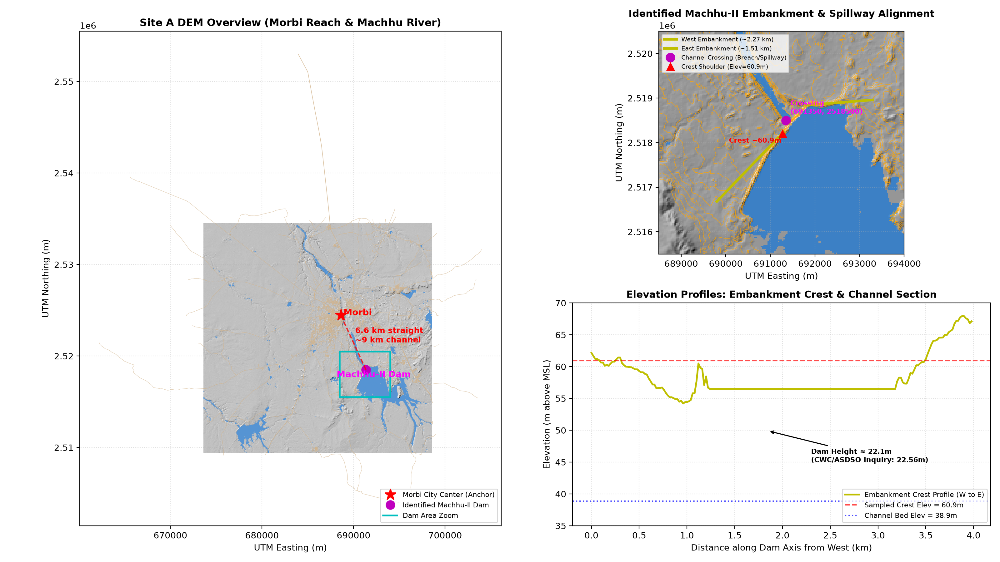

ASSUMPTIONS.md, as exact hydraulic coefficients are not empirically calibrated for evolving embankment breaches.


can_evacuate, tight, trapped) are pending under Roadmap Step 6 and are NOT implemented.

Exact values read from demo_data/benchmarks/ritter_stoker_results.json:
| Gate ID | Target Threshold | Ritter (Dry Bed) | Stoker (Wet Bed) | Status |
|---|---|---|---|---|
| G1-a (Front Pos Error) | ≤ 5.0% at Δx=5m | 0.89% | 0.78% | VERIFIED |
| G1-b (L1 Depth Error) | ≤ 5.0% at Δx=5m | 0.64% | 0.72% | VERIFIED |
| G1-c (Convergence Order) | Monotonic p > 0 | p = 0.90 | p = 0.84 | VERIFIED |
| G1-d (Max Front Error) | ≤ 3 cells (15.0 m) | 10.0 m (≤ 15 m) | 5.0 m (≤ 15 m) | VERIFIED |
| Secondary Solver | Delft3D FM Baseline | not stored | not stored | DROPPED (D6) |

verified: false until officially certified by dam authorities. Crest elevation is sampled from DEM bathymetry, and location is visually identified.
| Story Step | Implementation Status | Execution Grounding | Honest Scope & Presentation Boundary |
|---|---|---|---|
| Step 1: Watch | NOT IMPLEMENTED | src/damsight/watch/ (__init__.py only) |
Satellite blockage detection & GEE lake monitoring out of scope (Milestone 9). |
| Step 2: Pick Site | PASS | Real Config & Froehlich Engine | Machhu-II parameters loaded with explicit unverified tags; dynamic hydrograph generated. |
| Step 3: Physics Result | PASS | Precomputed 2D ANUGA Run | Real 6.62h simulation on 173,888 triangles; mass balance error 0.0022%, high-ground dry mass 100%. |
| Step 4: Uncertainty | NOT IMPLEMENTED | src/damsight/ensemble/ (__init__.py only) |
Monte Carlo ensembles and probabilistic rasters (P_flood) pending (Milestone 8). |
| Step 5: ML Surrogate | NOT IMPLEMENTED | src/damsight/surrogate/ (__init__.py only) |
Neural surrogate sliders for instant what-if inference pending (Milestone 6). |
| Step 6: Evacuation | NOT IMPLEMENTED | src/damsight/evac/ (__init__.py only) |
Vector exposure ingested and overlaid; network graph routing and road closure times pending (Milestone 8). |
| Step 7: Benchmarks | PASS | Exact Ritter & Stoker Gates | ANUGA vs analytical solutions VERIFIED on L1 error, front position, and spatial convergence. |
| Step 9: Validation | RAN: qualitative check | Historical Sanity Check (O2) | Depth shows partial overlap (7.7-10.5m vs 3.7-9.1m); arrival time has 1 open discrepancy (76.7m vs ~20m). |
| Step 10: Export | PARTIAL (GeoTIFF only) | Solver GeoTIFF Exporter | GeoTIFF rasters complete and verified; vector Shapefile (.shp) and KML export pending (Milestone 11). |